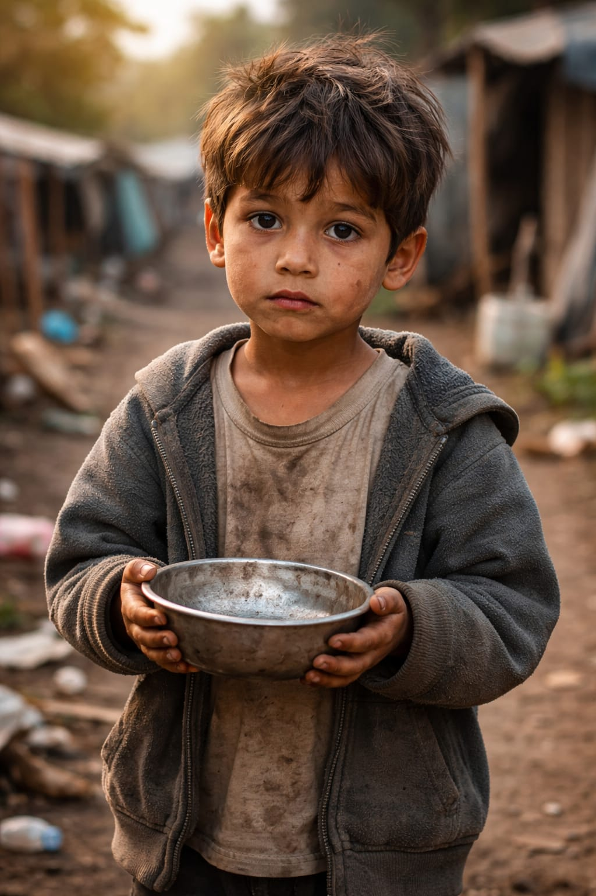

Nuestra causa
La Fundación Luz de Esperanza trabaja para apoyar a personas que atraviesan situaciones difíciles. Nuestro propósito es convertir pequeñas donaciones en grandes oportunidades.
Cada aporte nos ayuda a entregar alimentos, útiles escolares, ropa, medicamentos básicos y apoyo comunitario a quienes más lo necesitan.
Objetivo: crear una red solidaria donde todos puedan ayudar de forma fácil, clara y segura.
Por qué donar
Un pequeño aporte puede cambiar una vida
No se necesita donar mucho para hacer la diferencia. Cuando muchas personas ayudan, el impacto se multiplica.
Áreas de apoyo
Estas son las principales áreas donde usamos las donaciones recibidas:
Alimentación
Entrega de mercados y alimentos básicos para familias vulnerables.
Educación
Kits escolares, cuadernos, colores, morrales y apoyo académico.
Ropa
Recolección y entrega de ropa en buen estado para niños y adultos.
Bienestar
Acompañamiento comunitario, jornadas sociales y apoyo emocional.
Campaña del mes
Durante este mes estamos recolectando alimentos no perecederos y donaciones económicas para entregar mercados a 50 familias.
Tu donación cambia vidas ✨
Haz parte de esta cadena de ayuda y esperanza.
Haz tu donación
Completa este formulario para registrar tu intención de donar.
Panel de impacto
Resumen simulado de las donaciones registradas en la página.
| Donante | Tipo | Monto |
|---|---|---|
| Ana Pérez | Alimentos | $30.000 |
| Carlos Ruiz | Dinero | $80.000 |

Consulta simbólica de donación
En esta sección el usuario puede consultar un registro de donación usando el nombre del donante.
Ubicación de la fundación
Mapa de referencia para ubicar nuestra sede principal.
Formas de ayudar
Nuestra misión
Nuestra misión es conectar personas solidarias con comunidades que necesitan apoyo. Creemos que la tecnología puede facilitar la ayuda social, permitiendo registrar donaciones, mostrar resultados y motivar a más personas a participar. Este proyecto busca representar una página web funcional donde los usuarios puedan conocer la causa, registrar su donación y visualizar el impacto generado por la comunidad.
Transparencia en el uso de recursos
La fundación busca manejar las donaciones de forma clara y responsable. Cada aporte se registra y se clasifica según el tipo de ayuda.
Alimentación
Educación
Ropa
Bienestar
Canvas: dibuja tu mensaje solidario
En este espacio puedes dibujar un corazón, una frase o un símbolo de apoyo.
Mensaje editable para la campaña
Esta sección permite modificar el texto directamente en la página.
Registro local de donaciones
- Los datos del formulario se guardan temporalmente en el navegador.
- El panel de impacto se actualiza al registrar una nueva donación.
- El mensaje editable también se conserva usando LocalStorage.
- Esta es una simulación académica para demostrar almacenamiento local.
Tema aplicado: uso de LocalStorage para guardar información sin base de datos.
Video de la campaña
Audio de agradecimiento
Espacio para incluir un mensaje de voz agradeciendo a los donantes.
Contacto
Correo: contacto@luzdeesperanza.org
Teléfono: 300 123 4567
Ciudad: Bogotá, Colombia